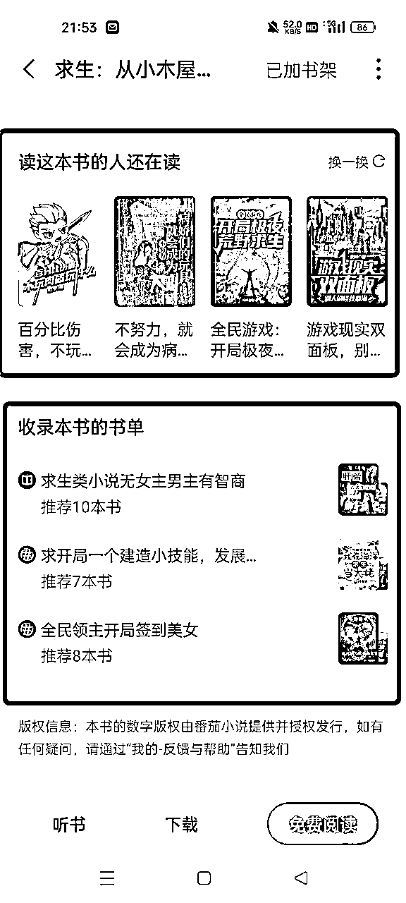

来源：https://qz5e4g7okh.feishu.cn/docx/JWMTdfoTzocjA9xvgkxc95LUn5g
大家好，我是圈友三月雨，目前大四在读～
大家平时看网络小说吗
我现在在做大概两个月。
正在开的书有5本，其中起点一本，番茄两本，七猫一本，刺猬猫一本。七猫那一本目前是千字15，番茄和刺猬猫都在吃全勤。起点那一本还没有上架。
每个月的收益大概是在6000左右。每天工作时间在4个小时，一本每天更新6000字，利用ai辅助更新。
纯新人第一个月能够赚到第一笔稿费（1200/800块），之后多开几本，熟悉流程和经验增长，收入会逐渐上升。
正文开始！
大家平时看网络小说吗
网文，指网络文学，现在一般称为商业性小说，作者在小说平台发布作品，读者阅读作品后会产生一些收益，这些收益与小说平台进行分成后转入作者账户，成为网文作者的收入。
网文不需要像传统出版小说、文学性小说那样深入了解社会现象，写出惊世骇俗的神作，它是读者的一场“白日梦”，在精神层面解决读者日常生活中无法满足的需求
比如现实中我没有大量的钱财和权势，被人瞧不起，但小说世界中我作为主角，通过金手指获得钱财和权势，打脸恶人、小人，或者，现实中我无法飞天遁地，拥有眼花缭乱的能力，但小说世界中我作为主角，修炼仙术后御剑飞行，指法一捏各种神通展现。作者帮助读者在小说世界中满足了精神需求，这就是网文的意义！
以收费模式来划分，分为免费小说与收费小说两种：
免费指看小说不需要花钱，但需要看穿插在小说中的广告；
收费指看小说的付费章节需要订阅章节才能阅读。
以风格分类来划分：
一是以小白文为主的番茄小说网（番茄）、飞卢小说网（飞卢）；
二是以老白文为主的起点中文网（起点）；
三是以二次元题材为主的刺猬猫、菠萝包轻小说（SF）
小白文，指情节简单，剧情浅白，套路明显的小说；
老白文，指情节复杂，剧情耐人寻味、套路变化多端的小说；
二次元题材，指以A(Animation动画)C(Comic漫画)G(Game游戏)N(Novel小说)为主的小说。
图中基本上就是各类主流网站，至于一些渠道和工作室，教给大家一个我经常用的方式
小红书搜类似于“小说投稿”“投稿”“作品签约”“小说稿费”“网文写作”“编辑投稿”“编辑收稿”这样的关键词，很容易搜到各种工作室或者是渠道的小红书账号，一般主页都会有邮箱
这里主要以番茄小说平台为例，比如你写一本小说，从头写到尾，主要经过以下5个流程
1、申请签约：2万字
2、验证期：8万字
3、首秀：10万字
4、全勤：10万字，听读≥200
5、多书名测试资格：20-50万字
2万字签约，不签约没有稿费。机签，基本都会签约成功~
保证每天更新4000字以上
作品进入推荐状态，首先进入为期7天的推荐验证期，会小规模给量
10w字后自动进入正式推荐状态。
每天稳定更新即可
作品字数达到8万字并且在推荐节点前连续3天每日更新4000字以上即开始首秀
过程中会进行流量分发
首秀推流到一定的流量池，会相对稳定一段时间，比如新人新书首秀在读人数3w人，那么接下去几个星期，她的在读都会持续在一万到三万左右
首秀期大概是3个周左右，首秀每天更新6000字，稳定定时更新，千千万不要断更！不要大改！
首秀前几天不来流量不要慌，看看自己的完读率，千千万不要断更！不要大改！正式首秀后，第一天一般都会给量，如果追读高，后续加大给量。
1.每日打卡字数及对应月金额4000字/日-600元/月 6000字/日-800元/月
全勤要求：10万字，听读稿费过200，每天更新4000～6000必须三条同时满足才可以有全勤。
准备5个书名和封面，推荐分发，测试不同书名的数据效果。留下数据最好的那个
具体疑问还请参考番茄小说网作品签约指南
https://fanqienovel.com/writer/zone/help/article?rank1=10000&rank2=10110&rank3=0&from=category
小tips：
建议日更6000以上
不要爆马甲，避免被恶意举报
首秀不要断更爆更，建议存稿到14万字
首秀不理想别切，可以等20万字冲书测
月初、月底开文，有助于冲全勤
每章建议2050-2300字
其实各种题材都能写，他考虑到ai的记忆限制以及逻辑性不是那么强，不推荐悬疑推理、游戏设定类、各种类似于医生之类的职业文，总之不推荐存在大量数据的作品类型
最好选择一个自己看过并且有兴趣写下来的作品类型，网络小说不是像公众号那样的，短期战斗，一两个小时就写完的那种。一部小说起码100万字，就算一天更新6000字，也要半年左右才能更新完。这半年都要写同一个题材并且是有逻辑性的不连断的。对于自己不习惯或者没看过的题材来说简直太痛苦了。即便有ai辅助。
喜欢看存在剑仙飞天遁地的就写玄幻，喜欢看家长里短的就写世情文，喜欢看末日废土丧尸爆发之类的就写末世生存文，喜欢看言情这些古代言情或者现代言情
关于流量，番茄都是ai推荐，基本上各个题材的流量都差不多，玄幻看的人少，但是单价比较高，并且会有完本收益。都市娱乐文看的人很多，但单价有的时候会压得非常低，几十万在读可能都不如几万在读的玄幻或者古代言情
选择一个自己喜欢的题材就好~
小说网站通常分为直签和内投
网站直签与内部投稿（内投）在网文创作领域有着不同的流程和特点
同人题材和原创题材
两者在起点精品作品的比例大概在5：5
原创题材：
玄幻类：灵气复苏，御兽流，巫师流，属性加点流，游戏设定类（开宝箱，捡属性，获得技能）。反派流，皇帝流，无敌流，原始流，签到流，召唤流，家族（宗门）流，种田流，极道流，女帝流（玄幻版赘婿），制卡流，两界穿梭，模拟器，
仙侠类：凡人流，种田流，古典仙侠，香火成神类，仙葫流，异兽流。蜀山，西游、洪荒、封神，白蛇、聊斋，
科幻类：机甲，基因，文明战争，末世灾变废土，异兽流，虫族，暴兵流，种田流，领主流，丧尸，硬科幻，末世召唤，御兽流，末世求生类，其他大宇宙星空类背景题材。
都市类：鉴宝，直播，荒野求生，科技文，东京美国南非等外国种田文，狗粮文，异兽流职业文，娱乐文（文娱，华娱，韩娱，港娱，日娱），重生文，年代文，神豪文，种田流（农场，山林，空间，渔场，海洋，或者其他种田类金手指）
历史类：大秦，大汉，大魏，大明，大宋，大唐，大清，民国，三国，架空历史，红楼，水浒，种田文（世家，地主，经商，种田，发育，经营，建立势力），外国历史，权谋类（世子，小官，高官），皇帝流，领主流（种田，争霸），创意历史文（聊天群，两界穿梭，系统历史文等）。
奇幻：魔法师骑士题材，亡灵题材，神格信仰体系，深渊恶魔类，爆兵流，异兽流（巨龙，兽人，其他异类）巫师流，种田流（领主）。
武侠：高武，镇魔司，东厂，六扇门，极道流。
体育：篮球，足球，跑步，拳击。
同人题材：
诸天流，聊天群类，倩女幽魂、九叔，四合院同人，亮剑同人（军事），权游，霍格沃兹，艾泽拉斯，哈利波特，战锤同人
武侠同人：金庸古温梁黄武侠同人（射雕，神雕，天龙，武当，大唐双龙传，小李飞刀，寻秦记，倚天，笑傲，鹿鼎记，绝代双骄，陆小凤，等港漫（风云，苦境，秦时），综武，诸天。
诸天无限同人（包括各种热门影视剧和火热网文）：
小欢喜，我的体育老师，小舍得，长津湖，僵约，僵尸道长，宝莲灯，爱情公寓，知否，余欢水，三十而已，人世间，流金岁月，都挺好，欢乐颂，青云志，黄飞鸿，叶问，致我们终将逝去的青春，无间道，赌神，喜剧之王，夏洛特烦恼，破坏之王，大话西游，杀破狼，警察故事，大时代，力王，古惑仔，反贪风暴，窃听风云，西红柿首富，非诚勿扰，唐人街探案，误杀，向往的生活，财阀家的小儿子，对不起我爱你，来自星星的你，蓝色生死恋，薰衣草，浪漫满屋，特摄（奥特曼，假面骑士等）。
美漫（金刚狼，超人，漫威，蜘蛛侠等）
中州队（无限恐怖），行尸走肉，斗罗，斗破，大主宰，武动乾坤，吞噬星空，万族之劫，盘龙，全球高武，庆余年，将夜，星辰变，雪鹰领主，莽荒纪，九鼎记，宇宙职业选手，全职法师，轮回乐园，神秘复苏，凡人修仙传，遮天，神墓，完美世界，圣墟，万古神帝，诡秘之主，一世之尊，全职高手，永生，龙蛇演义，星河大帝，阳神，盗墓笔记，港综同人
二次元同人：原神，鬼灭，死神，火影，海贼，犬夜叉，灌篮高手，龙珠，柯南，美食，拳愿，刃牙，只狼，一人之下，龙族，怪猎，精灵，宝可梦，超神，游戏王，神奇宝贝，圣斗士，训练家，型月，崩坏，星海镖师，克苏鲁，帝皇剑，拳皇，碧蓝航线等等。
这里不讲理论，以实操的方式带大家将完整的流程走一遍
找5本成绩比较好的作为对标，不要选作品巅峰榜上的作品，很多时候是作者的原因，不是作品的原因。要么是作者有名，能把自己的作品带到巅峰榜，要么是作品写的太好了。反正哪一点倒不是咱们能够比较的。
选择作品推荐榜上的即可，比如你觉得这一本非常好看，想写类似的小说
这里我举一个例子~《求生从小木屋开始抵御寒流》
就可以找5本类似的进行对标
一般多看一会ai就会进行自动推荐
或者在书籍简介的最下面，会有一个读这本书的人还在读(大数据推荐)和书单收录，一般里面同类型的书还有很多
在这里我就找到了
《迷雾求生：我能看到技能提示》
《求生：从茅草屋开始对抗洪水》
《海岛全民垂钓：我独享史诗级天赋》
《公路求生：开箱必定幸运》
之后进行对标，大致的内容就是全球60亿人。穿越到了异世界。在异世界即将面临自然灾害(洪水、寒潮、暴雨)，努力打怪采集木材石块升级自己温暖的小木屋。而主角拥有金手指，能够升级物品，比别人拥有更高级的求生物品，享受他人羡慕的目光、评论。
在其他人因为寒潮而裹紧被子在小木屋冻得瑟瑟发抖时，自己在温暖的大别野里烤着火炉，手里摇晃着红酒杯（爽点）
《求生从小木屋开始抵御寒流》简介：【求生】【建造庇护所】【灾难】【囤物资】全民穿越。齐原一觉醒来，出现在危机四伏的迷雾世界。寒冷，饥饿，野兽，大雨，成为所有人生活的主旋律。日出而作，日落而息成为所有人的生活状态！

如果你已经成功做好了第1步对标，那么第2步起一个标题相对来说是很简单的，比如我这里。
《求生从小木屋开始抵御寒流》
《迷雾求生：我能看到技能提示》
《求生：从茅草屋开始对抗洪水》
《海岛全民垂钓：我独享史诗级天赋》
《公路求生：开箱必定幸运》
这里我想到的标题是《黑夜求生：从小木屋开始抵御大洪水》
又或者比较传统的起名法
第一种：题材起名法
常见于快穿或者爽文，这类突出题材类型的书名有助于大家筛选，读者受众喜好更精准。
例如：《守寡后我重生了》《穿进赛博游戏后干掉BOSS成功上位》《爽文女主她不想爆红》
第二种：突出人设法
这类一般突出强调人物职业等相关亮点，或者介绍人物关系。
这样的书名有助于读者对你的书产生联想，尤其是不寻常的职业形容词搭配，从而进一步点进你的书阅读。
例如：《高危职业二师姐》《朕的爱妃只想吃瓜》《为夫曾是龙傲天》《回到明朝当王爷》
第三种：突出剧情主要矛盾法
这些书从书名就可以看出剧情点，作者在主线剧情设计的时候也比较简单，和书名贴合即可。
例如：《女寝大逃亡》《我以为我拿的救赎剧本》《穿越到四十年后爱人变成了老头怎么办》《修真界禁止物种歧视》
第四种：不走寻常路法
这类书名大多用比较新奇的元素，或者苏点萌点去吸引读者，制造出一定的戏剧冲突。例如：《修真界禁止物种歧视》《我就想蹭蹭你的气运》《我靠血条碾压修真界》《十分满分的甜》《这膝盖我收下了》
小白一点，把5本书的书名简介复制在一起，结合自己的小说标题，让chatgpt给你融一段
这里我演示一下：
《求生从小木屋开始抵御寒流》简介：【求生】【建造庇护所】【灾难】【囤物资】全民穿越。齐原一觉醒来，出现在危机四伏的迷雾世界。寒冷，饥饿，野兽，大雨，成为所有人生活的主旋律。日出而作，日落而息成为所有人的生活状态！
简介：
全民穿越到《迷雾世界》之中。
四周全是迷雾，开局就一个破草棚，而你必须在危险的野外寻找物资和木材，维持篝火不熄才能生存下去！
而当别人还在艰难生存的时候，叶千帆却已经靠着神级提示，获得了装备和庄园领土！
【东面：迷雾森林外围，有一个白银宝箱！】【西面：有一头饥饿的闪电豹正在等待你的光临！】
【南面：有一只多眼怪，如果被它看上一眼你就会被石化！】
【北面：草原里藏着黄金宝箱，周边有一群毒蜂守护】
简介：
【灾难求生】【庇护所】【种田发育】
资】【不种马】【不圣母】
全民穿越迷雾世界，张弛一觉醒来，出现在四处漏水的茅草屋，并得知不久后要面临洪水的袭击。
外面雨下不停，越来越大，所有人只能在暴雨、洪水、野兽、怪物的威胁下挣扎求生..
简介：
【灾难求生】＋【种田发育流】＋【超凡元素】＋【无种马】＋【数据流】＋【不圣母】
凌晨2：00前更新
全民穿越海岛世界，有人开局降落荒岛，有人被迫海上逃生，资源食物全靠一根资源竿垂钓。黑幕下白雾降临，人们只能蜷缩在岛上的木屋内，当恐怖的天灾与无尽的怪物袭来，所有人只能奋力的求生.
张开双翼就能遮住太阳的千头邪鸟，如山岳般大小的克鲁诡兽，侵蚀世界的高等污染源。
一尊尊不可名状的邪神，一位位至高无上的序列。
当穆雨看透世界的真相，蓦然回首已走上了巅峰。
“我！穆雨能做到万岛之主，天灾终结者，海洋守护神，序列至高，元素龙骑皇等..全靠我自己一步一步走来，不，种田来的！”
穆雨大喝道：“天赋，进化暴击！”
叮～暴击成功，恭喜您打造出传说武器：弑神之矛！
叮～暴击成功，恭喜您打造出超凡装备：极天火之翼！
叮～暴击成功，恭喜开启史诗宝箱获得：破碎神格！
我的提问：我的小说标题叫做《黑夜求生：从小木屋开始抵御大洪水》，这是和我同类型小说的小说简介，你能够帮我结合我的小说标题融合成一段吗
chatgpt回答：【灾难求生】＋【小木屋建造】＋【无种马】＋【不圣母】+【杀伐果断】
外面的世界正经历着前所未有的巨变，暴雨倾盆，洪水泛滥，而更可怕的是隐藏在暗处的野兽和未知生物。在这样的环境下，每个人都在为了生存而挣扎，寻找着任何可能帮助自己度过难关的资源。
然而，在这场生存游戏中，方岩凭借着自己的智慧与勇气，逐步发展起自己的避难所。他不仅要抵抗自然界的挑战，还要在资源有限的情况下，建造坚固的防御工事，抵御即将到来的大洪水。
还行比较不错，稍微修改完全可以使用，强烈推荐这种方式，利用对标后直接将简介结合自己的书名标题融合到一起
如果想自己想简介：
1.交代背景，开局点出人物困境
2.强化矛盾冲突
3.交代主线
4.过渡递进、突出
5.男主出场、女主掉马、金手指等
6.以反转和反差萌结尾
（345顺序不分前后）
自带流量的“cp人设标签”放在简介前头，比如【病娇＋穿书＋团宠＋万人迷……】
例如：
《我在修仙界搞内卷》
书籍简介
简介：秦姝穿书后，得知自己是个顶替了庶妹去修仙的冒牌货。修仙八年，一朝庶妹以凡人之资入道，她的遮羞布被当众揭开，才练气三层的她被宗门无情地逐出师门。（1、交代背景）（2、人物困境）
她容貌绝色，被人炼做炉鼎，不出三年便香消玉殒（3.强化主线矛盾）
秦姝看着窗外蒙蒙亮的天色，陷入了沉思。
努力修仙！在庶妹入道之前提高修为！争取活下夫（4、交代主线）
打坐能提升修为？不睡了！
吃顿饭一来一回两刻钟？不吃了！
据说隔壁剑宗大师兄每日晨起挥剑一千下？秦姝：两千次！（5、过渡递进，突出人设、卖点“卷”）
人人都道丹宗的秦姝疯了，一个炼丹师比剑仙还卷，从此整个玄天宗的修士都疯了。
八年后，庶妹横空出世，秦姝主动卷铺盖走人。玄天宗又疯了，“何人劫持我大师姐”（6.转折高潮）
传闻中杀人如麻的大魔王谢释渊放出话去，“谁敢动我爱妻秦姝，便是与我重天宫为敌。”此消息一出，整个修仙界都震惊了（6和7其实也就是女主“掉马”的大爽点）
跑路途中不忘刷玉简与时俱进的秦姝满头问号，岂料那位大魔王却悄悄发来传音符，“仙子可还记得跟你花前月下小蛇蛇？”
八年前，她曾经一时心软救过一条小黑蛇，谁成想居然真就被蛇缠上了？（8、以反转和反差萌结尾）
分析结果写在评论中
例2:
标题：全家偷听我心声杀疯了，我负责吃奶
简介：【全家读心术+炮灰+团宠+大佬穿书+扮猪吃虎+爽文】
陆朝朝穿书了。
穿成出生被溺毙，还被女主顶替了身份的炮灰。女主大义灭亲，举报养母和外祖父通敌卖国，害的全家灭门。女主接回亲娘，和渣爹金蝉脱壳，和和美美过一生。
只陆朝朝全家，皆为垫脚石。
陆朝朝看着被PUA多年的娘亲【娘啊，你心爱的相公在等外室生孩子呢。】
通过吐槽，不经意间改变剧情恋爱脑母亲清醒了！
女主躺赢，带领全家反击命运陆朝朝看着残疾大哥叹气：【大哥，你被人灌尿，钻胯，活脱脱美强惨啊！好在，你这腿我能治！ 】
1.淘宝购买：5块钱一张
2.使用sd/mj制作，配合无版权字体
没有太多要求，基本上都可，字体和图片一定要无版权
参考：
每个月超过800块稿费的部分，国家要收税
计算税的标准是每月超过800的部分收取20%的税，
稿费国家规定这个类别是打7折的也就是14%。
所以比如说你一个月收入1000块，那么你的收入就是
800+ (1000-800) *14%
按月总额计算的
14%的税，到了第二年的时候，打开个人所得税APP，里面能申请退税。
这里的赚钱不是说月入几万，而是赚到人生中第1笔稿费1200
现在标题简介和封面已经全部解决了，就该用ai写小说的内容了
肯定不可能是有一个prompt，然后全自动化输出，嘟嘟嘟嘟嘟~三两下就把今天的6000字全部输出完了
效果太差了，到5万字剧情的逻辑性就已经完全连不上了
并且剧情也不好看，看30秒的短视频觉得不好看，忍一会儿也就看完了
但是看两个小时的电影，前10分钟感觉非常没意思。还会耐心把后面1小时50分钟全部看完吗，恐怕大多数人立刻就走掉了
通常一本实体书在15万到20万字之间，很多人翻着翻着可能就放弃了。
而一本网络小说长篇动辄在百万字起步，很有可能在300万~600万字完本
这种规模的作品。如果全部交给ai，基本上是没法看的，会特别特别枯燥，
如果没有体会过这种感觉，可以去看一看《宇宙巨校闪级生》，一部完全用ai写的小说，全文长达100000000多字，但99.999999%的人，都看不过前三章，因为这书写的太没意思了。
所以这里还是需要人的辅助，如果想提高质量，一本书赚到更多稿费的话，更应该是人为主，ai为辅
关于ai工具，我目前使用的是星月写作里面的GPT4o和Claude3.5，写内容主要用Claude3.5， API价格还可以就用它了，国内的比较推荐零一万物的large模型，或者Kimi的付费模型。
其他的感觉输出的文字有一点呆呆的，就是有很浓厚的ai味，让人一眼读起来就感觉像ai写
https://xingyuexiezuo.com/?inviter=347#/register
一本小说通8~12万字为一卷，一本书由多卷构成，每一卷都有一个完整的故事结构，一个完整的起承转合或者三幕式，一些流行的结构模板，比如“斯奈德节拍表”、“英雄之旅”、“天龙八部”“救猫咪”“弹弓理论”等，其实都是基于这两大结构而来。国内一般讲“起承转合”，老外则主要用“三幕式”，两者差异不太大。起承转合是故事发展的四个阶段，通常对应为：
起→开端
承→发展
转→高潮
合→结局
小说提前准备的大概需要：设定，黄金三章，框架节奏
就是一些比较基础的世界观，如果已经对标阅读了5本相似的小说，大概是一个怎样的世界观可能心里也会有大致的印象，比如能够修仙、会使用魔法，世界观比较偏冷漠残忍，主角比较杀伐果断，又或者古代不考据以言情为主，人物比较偏幽默立体，欢乐古言体之类的~
这里我使用ai总结了一下全民废土求生文的设定~
设定全球60亿人在一个异世界或末世环境中，所有人类突然被抛入一个充满危险和资源匮乏充满迷雾的世界，必须通过不断打开宝箱获取生产物资求生，文明社会的一切规则和秩序即将失效，取而代之的是生存法则，飓风、暴雨、洪水、寒潮、酷暑等自然灾害成为主要挑战。主角通常会有一个独特的金手指，例如可以查看物品信息、获得特殊道具或技能、拥有比其他人更高的资源获取效率等。这些金手指使得主角在这个残酷的世界中能够迅速崛起，逐步建立自己的庇护所，收集资源，抵御外敌，并最终探索更大的世界。
基于名字和设定，我选择主角方岩一觉醒来在一个简陋的小木屋，耳边听到了机械声音，告诉他一个月后全球60亿人都将遭遇大洪水，请升级小木屋抵御大洪水。
他赶紧查看四周还有自己身边的《求生手册》(通讯器)，看到一个1万人的大型聊天频道，正在不断输出恐慌，“妈妈我要回家”“这不是真的”“我有一个亿，我出1,000万，谁把我带出去必有重谢”，主角方岩关掉聊天频道，查看自己的金手指，可以将宝箱内打开的物品自动升级一阶(绿色变蓝色，紫色变金色)。出门看到永不消散的黑夜，世界只分为深夜和浅夜，深夜为16小时，浅夜为8小时，深夜有大恐怖，只能在浅夜出去伐木采集石头等生存物资以及开宝箱。
经过探险主角开宝箱开出好东西，惹的频道内众人哄抢(爽点)，有人眼红嫉妒想要偷袭主角，拿着长矛到主角家前，却发现主角已经修仙会魔法了~一发火球术灰飞烟灭(爽点)
修仙有修仙的爽点，古言有古言的爽点，如果前期做好对标功课，将5本同类型的书都看得比较详细的话，前期的剧情和设定是不成问题的
可以类比成短视频的开头三秒，或者公众号文章的导言
一般看完前三章不选择退出的话，基本都会一直往下看，不知不觉看着看着可能几十万字都看下去了。除非期间写的特别毒或者流水账式的无聊，一般都会看到最后
这开头三章建议的是先抄后超，讲起来太复杂了，很多网文写作课主要讲的就是黄金三章。
这里我使用ai把，前三章全部复制下来，交给ai，请他帮我把框架梳理出来
前三章原文（《求生从小木屋开始抵御寒流》的前三章原文）
prompt：现在你是网络小说作家，请你对我的作品进行拆分和分析，请分段概括这段的内容和作用并标出每段的字数
第二个prompt：直接按顺序总结每章的核心剧情。不需要解释。每条剧情前面显示【剧情+序号】
结合我自己的设定，在保留框架的前提下，进行修改
设定：
全球60亿人在一个异世界或末世环境中，所有人类突然被抛入一个充满危险和资源匮乏充满迷雾的世界，必须通过不断打开宝箱获取生产物资求生，文明社会的一切规则和秩序即将失效，取而代之的是生存法则，飓风、暴雨、洪水、寒潮、酷暑等自然灾害成为主要挑战。主角通常会有一个独特的金手指，例如可以查看物品信息、获得特殊道具或技能、拥有比其他人更高的资源获取效率等。这些金手指使得主角在这个残酷的世界中能够迅速崛起，逐步建立自己的庇护所，收集资源，抵御外敌，并最终探索更大的世界。
基于名字和设定，我选择主角方岩一觉醒来在一个简陋的小木屋，耳边听到了机械声音，告诉他一个月后全球60亿人都将遭遇大洪水，请升级小木屋抵御大洪水。
他赶紧查看四周还有自己身边的《求生手册》(通讯器)，看到一个1万人的大型聊天频道，正在不断输出恐慌，“妈妈我要回家”“这不是真的”“我有一个亿，我出1,000万，谁把我带出去必有重谢”，主角方岩关掉聊天频道，查看自己的金手指，可以将宝箱内打开的物品自动升级一阶(绿色变蓝色，紫色变金色)。出门看到永不消散的黑夜，世界只分为深夜和浅夜，深夜为16小时，浅夜为8小时，深夜有大恐怖，只能在浅夜出去伐木采集石头等生存物资以及开宝箱。
《黑夜求生：从小木屋开始抵御大洪水》
第一章全球黑夜世界
【剧情1】方岩被一道机械冰冷无情的声音告知，他和全球60亿人类被传送到了一个黑夜求生世界。请升级小木屋抵御大洪水
【剧情2】方岩发现自己在一座破旧木屋中，木屋环境简陋的描写
【剧情3】方岩收到生存手册，提示他木屋是安全的，但需要升级；世界只分为深夜和浅夜，深夜为16小时，浅夜为8小时，深夜有大恐怖，只能在浅夜出去伐木采集石头等生存物资以及开宝箱。
【剧情4】方岩找到《生存手册》手册介绍了世界的情况、天气、聊天频道等。
【剧情5】方岩发现全人类都在这个黑夜世界中，一万人的聊天频道里充满了求生者的困惑和恐惧。
第2章 外出
【剧情7】方岩查看《生存手册》得知浅夜为8小时，能见度20米，适合外出收集物资。
【剧情8】方岩尝试砍树，砍了5单位木材，发现效率很低，决定先运回木材，然后寻找食物和水源。
【剧情9】方岩在西方面发现一个黑铁资源箱，里面有饮用水聚集器卷轴（绿色），锋利的铁斧（绿色），营养补充剂（食品、白色）。
【剧情10】叮！方岩听到冰冷的声音，您已获得天赋天赋，还是ss级宝箱皇帝，你所开启的每一个宝箱，物品自动升一阶(品级:白色、绿色，蓝色，紫色，金色，暗金，传奇)
第3章 获取资源箱
【剧情11】方岩在西面继续探索，进入薄雾区，发现大量松树资源。
【剧情12】方岩采集了234个木材，74单位的松果，准备回木屋时发现一个白色资源箱。
【剧情13】方岩打开白色资源箱，获得一瓶饮用水500ml、一张羊皮和20个石材。
【剧情14】方岩将资源箱当做储物箱使用，整理木屋，准备应对接下
这里细纲剧情部分是手工修改的，在进行扩写的时候会用到ai扩写的多一点
写作模型使用Claude3.5，将细纲剧情，填入进行扩写。这里我放一部分写出来的开头
prompt：现在你是网文作家三九音域，请你使用三九音域的写作风格对于我给出的剧情进行扩写，写作要求:强代入感，多使用网络热词-热梗-多旁白，以动作心理描写推进剧情，适当增加环境描写
方岩睁开眼睛，发现自己躺在一张硬邦邦的木板床上，周围一片漆黑。这是哪儿？方岩怎么会在这里？脑子里一团浆糊，完全想不起来之前发生了什么。
就在方岩一头雾水的时候，一个机械音突然在耳边炸开：
“尊敬的求生者，欢迎来到黑夜求生世界。您和全球60亿人类已被传送至此。请尽快升级您的小木屋，以抵御即将到来的大洪水。”
方岩猛地从床上弹起来，差点撞到头。等等，什么鬼？全球60亿人类？黑夜求生世界？大洪水？这是在拍科幻片吗？
方岩揉了揉眼睛，努力适应黑暗。慢慢地，周围的环境开始变得清晰起来。方岩发现自己身处一间破旧的小木屋里。墙上到处是蛛网和裂缝，地板上积了厚厚一层灰，踩上去咯吱作响。角落里一盏油灯摇曳着微弱的光芒，投下诡异的阴影。
方岩深吸一口气，立刻被呛得咳嗽起来。这空气中弥漫着一股霉味，简直让人窒息。方岩赶紧走到窗边想透透气，却发现窗户纹丝不动，像是被什么东西死死封住了。
就在这时，桌子上突然凭空出现了一本泛黄的书。方岩拿起来一看，封面上赫然写着《生存手册》。
方岩迫不及待地翻开手册，开始仔细阅读。这本手册介绍了这个世界的基本情况：这里只有深夜和浅夜两个时间段，深夜持续16小时，浅夜则为8小时。
更令人不安的是，手册警告说深夜时会出现“大恐怖”，因此只能在浅夜时外出采集资源和开启宝箱。方岩不由得打了个寒颤，这是什么鬼地方啊？
继续往下读，方岩了解到这个世界的天气变化莫测，还有一个可以与其他求生者交流的聊天频道。方岩立刻打开频道，发现里面已经挤满了一万名求生者。
聊天频道中充斥着各种困惑和恐慌的声音：
【全球频道】
星尘旅人: 这是哪里？方岩们为什么会在这里？
咖啡行者: 谁能告诉方岩该怎么升级木屋？急！！！
豆浆油条不爱吃: 深夜的大恐怖到底是什么？有人知道吗？好害怕…
旧唱片: 有人知道怎么获得资源吗？木屋太破了
猫咪的小秘密: 浅夜只有8小时，大家抓紧时间出去探索吧
看着这些信息，方岩感到一阵头晕目眩。深呼吸，冷静，现在可不是慌的时候。方岩必须尽快适应这个新世界，找到生存之道。
方岩再次环顾四周，这次注意到了更多细节。墙上挂着一些生锈的工具，看起来年代久远。角落里堆着一些木头和石头，应该就是升级木屋用的材料了。
质量还行，有些部分需要自己手动修改一下，这样的质量稳定更新在番茄基本上能够拿到1万左右的在读，每天大概都有100多的收入，
从头开始带大家再实操一个，比如你比较喜欢看也比较喜欢写这样的古代情感日常文，同样是先找对标，利用【收藏的书单】和【读这本书的人还在读】
这里找到了《小城大户的主母日常》
《糙狱卒的小娇妻》
《不婚男女的古代养娃日常》
《山村深处有人家》这四本类似的日常文，然后进行对标，这里至少要把这5本书读100章以上，把这种类型的作品前20万字的大致情节了解清楚的
阅读了这5本书的大致剧情。我还是打算以一个日常文为主。
大致是架空宋朝，女主谢雨昕嫁给了崤山县开药铺郎中的男主苏泽阳，穿越到了结婚的前一天，听说常年在外、家道中落，没想到结婚后却很恩爱~的日常文
这种类型的文，不像上面的废土文一样，有一致的起名规律，可以参考上文小说标题怎么起的传统取名法进行取名。不要把书名取得太文艺，比如：“青山在，凤嘲凰，丹娘，九重锦” 太文艺的标题。可能读者在刷屏幕的时候，一眼就扫过去了，不清楚这本书究竟讲了什么符合符不符合自己的口味。就建议直接把书中主要的内容体现在标题中，这里我想了一下，叫《山有木兮:药师的宠妻日常》
这里同样是使用AI进行简介融合。我把简介贴出来
简介：
【传统古言＋商户夫妇＋婚后甜宠＋日常恩爱＋家长里短】
女主温柔清醒不受气VS男主体贴幽默有手段。
白河镇的沈家小女，嫁给了平山县开生药铺的谢家二郎，听说他常年在外，家道中落，没想到婚后很恩爱，相当恩爱，恩爱了一辈子。新婚阶段：
小镇姑娘沈绮：人人都说，我被退过亲的克夫命，娘家也无人能撑腰。
商海奇才谢聿铎：结发为夫妻，恩爱两不疑。有你在，我谢二才能有这般羡煞旁人的好福气。
简介：
【市井生活】＋【家长里短】＋【日常】＋【种田经商】
ps:没有金手指，女主是胎穿
避雷：不是双洁，介意勿入！
高大威猛的刑狱小吏
和肤白貌美却泼辣非常的豆腐西施
一个霸道又放荡不羁
一个看似柔弱实则浑身是刺
且看市井人家是如何努力奋斗出
属于自己的自在日子
简介：
【古代】＋【双穿】＋【养娃】＋【架空历史】＋【家长里短】＋【无空间】＋【无金手指】
沐以安，农学校老师一枚，三十多岁不结婚，差点被亲妈逐出家门。
江书韵，高中政治老师，四十多岁，不婚不孕主义者，父母常年在外，尊重他的选择。
一次电梯事故，两人双双来到架空的大历朝。沐以安无痛当娘，江书韵被迫当起了爹。
两个人一起，会擦出怎样的火化，敬请期待吧！
简介：
穆春娘在穆家生活了十四年，起得比鸡早，睡得比狗晚。
家里的两个姐姐都定亲了，她也不着急，原想着到时找个差不多的人嫁了。
谁知道先是被人以父亲的救命之恩相胁，后被亲人惦记卖身银子，想拿她换钱。
无路可走之下，春娘决定赌一把，拿着自己偷藏的钱，找到了村里的“扫把星”。
“你能娶我吗？聘礼我自己给。”
周林深：“..”
倒也不用，他娶媳妇的钱还是有的。
嫁给周林深后，春娘才知道，她随便抓的夫君，比她家底厚。
这里用的是通义千问：
这里其实可以看到ai输出的简介质量尚可，稍微修改一下完全能用，如果觉得不满意可重新生成几次
【宋风雅韵＋药铺夫妇＋穿越甜宠＋市井温情＋家长里短】
谢雨昕，现代女子穿越成宋朝大家闺秀，嫁与崤山县药铺郎中苏泽阳。传闻他常年漂泊，家境日渐衰微，然穿越之际恰逢婚期前夕，她心怀忐忑步入洞房。未曾想，苏泽阳温润如玉，二人婚后情深似海，恩爱非常。
苏泽阳：世事浮沉，唯愿与你共度此生。
谢雨昕：前尘往事皆烟云，此生只愿与君相伴。
且看穿越而来的谢雨昕如何在陌生时代中找到自己的立足之地，与丈夫携手共创美好未来，在寻常百姓家中演绎一段温馨动人的爱情故事。
我修改了一下：
【传统古言＋市井温情＋婚后甜宠＋日常恩爱＋家长里短】
谢雨昕，现代女子穿越成宋朝大家闺秀，嫁与崤山县药铺郎中苏泽阳。传闻他常年漂泊，家境日渐衰微，然穿越之际恰逢婚期前夕，她心怀忐忑步入洞房。未曾想，苏泽阳温润如玉，二人婚后情深似海，恩爱非常。
苏泽阳：世事浮沉，唯愿与你共度此生。
谢雨昕：前尘往事皆烟云，此生只愿与君相伴。
从最初的陌生到后来的相知相爱，谢雨昕与苏泽阳在柴米油盐酱醋茶的日常中找到了幸福的真谛。无论是药铺中的忙碌，还是邻里之间的交往，他们都用心经营着这份来之不易的感情。
作品封面图可以去淘宝购买或者自己做，自己做建议无版权字体和图片
prompt：直接按顺序总结每章的核心剧情。不需要解释。每条剧情前面显示【剧情+序号】
【剧情1】沈绮回家发现有媒婆来提亲，是为平山县谢家说媒
【剧情2】沈绮因两年前被退亲后有"克夫"流言,导致多次相亲无果
【剧情3】沈绮母亲张氏对谢家提亲感兴趣,沈绮同意明日相看
【剧情4】刘媒婆上门揭露谢家真相,称家道中落且谢家二郎地位不高
【剧情5】张氏开始动摇,刘媒婆趁机推荐其他人家
【剧情6】沈绍怒赶走刘媒婆,沈绮听到全过程后叹气
【剧情1】谢家人上门相看沈绮
【剧情2】谢家二婶冯氏与沈家女眷交谈，打量沈家环境
【剧情3】冯氏见到沈绮，对她的美貌和气质印象深刻
【剧情4】沈绮端茶时被谢聿铎远远看到，他被她的美貌吸引
【剧情5】谢家人离开时引起邻居议论，提到沈绮"克夫"的传言
【剧情6】谢家人在回程路上讨论沈家的情况
【剧情7】谢晏询问谢聿铎的想法，谢聿铎表示愿意尽快下聘
【剧情1】谢家人来沈家相亲
【剧情2】沈家人晚饭时讨论谢家的情况
【剧情3】沈绮回忆谢家人的样子,担心自己的婚事
【剧情4】第二天早上,媒婆带来好消息
设定：架空宋朝，女主谢雨昕嫁给了崤山县开药铺郎中的男主苏泽阳，穿越到了结婚的前一天，听说常年在外、家道中落，没想到结婚后却很恩爱~的日常文
根据设定适当修改前面的细纲，借鉴的是这个文的框架和结构，而不是剧情。是它在哪里高潮，哪里有转折，哪里进行情绪的积蓄，又在哪里爆发。很多人刚开始写小说很容易把握不好框架，然后整个文章全文就崩掉了，或者写的特别干燥无味，借鉴框架能让自己的小说变得更好看一些剧情没有必要和它一样，和它一样的话，极有可能被认定为抄袭暂停稿费的。
第 1 章 媒婆
【剧情1】谢雨昕回家发现有媒婆来提亲，是为崤山县苏家说媒
【剧情2】谢雨昕因两年前被退亲后有"克夫"流言,导致多次相亲无果，谢雨昕穿越，亦是处于被大运即将撞到之前，感到庆幸。
【剧情3】谢雨昕母亲张氏对谢家提亲感兴趣,谢雨昕同意明日相看
【剧情4】刘媒婆上门揭露苏家真相,称家道中落且苏家地位不高
【剧情5】谢氏开始动摇,刘媒婆趁机推荐其他人家
【剧情6】谢颖怒赶走刘媒婆,谢雨昕听到全过程后叹气
第 2 章 下聘
【剧情1】苏家人上门相看谢雨昕
【剧情2】苏家二婶王氏与谢家女眷交谈，打量谢家环境
【剧情3】王氏见到谢雨昕，对她的美貌和气质印象深刻
【剧情4】谢雨昕端茶时被苏宇远远看到，他被她的美貌吸引
【剧情5】苏家人离开时引起邻居议论，提到谢雨昕"克夫"的传言
【剧情6】苏家人在回程路上讨论沈家的情况
【剧情7】苏询询问苏宇的想法，苏宇表示愿意尽快下聘
第 3 章 亲事
【剧情1】苏家人来谢家相亲
【剧情2】谢家人晚饭时讨论苏家的情况
【剧情3】谢雨昕回忆苏家人的样子,担心自己的婚事
【剧情4】第二天早上,媒婆带来好消息
写作模型使用Claude3.5或者gemini pro，每一次将1~3条剧情进行扩写，每次输出1000字左右
prompt：现在你是网文作家京圈太子爷，请你使用京圈太子爷的写作风格对于我给出的剧情进行扩写，写作要求:强代入感，多使用网络热词-热梗-多旁白，以动作心理描写推进剧情，适当增加环境描写
这里截了生成小说的一段，还行，切记不要一下将全部的剧情都塞入其中进行扩写。推荐每次1~3条剧情进行扩写，每次输出1000字左右
谢雨昕站在屏风后，听着堂屋里的对话，心中暗自盘算。这刘媒婆可真是个戏精本精啊，前脚刚说苏家公子如何如何好，转眼就开始diss人家家世不行。啧啧啧，这波操作可以说是老六本六了。
不过话说回来，这位苏公子到底是何方神圣？谢雨昕眯起眼睛，脑海中浮现出一个俊美少年的形象。该不会是什么霸道总裁、冷面王爷之类的男主吧？想到这里，她不禁打了个寒颤。可别吧，咱可不想当什么女主角，只想安安稳稳过日子。
就在谢雨昕胡思乱想之际，张氏的声音传来：“雨昕，你出来一下。”
谢雨昕整理了一下衣裳，深吸一口气，迈步走出屏风。只见张氏一脸愁容，显然是被刘媒婆的话搞得心烦意乱。
“娘，怎么了？”谢雨昕故作不知地问道。
张氏叹了口气：“那苏家的事，怕是不成了。”
谢雨昕心中暗喜，面上却装出一副失望的样子：“哎，那可真是太可惜了。”
张氏见状，连忙安慰道：“傻丫头，别难过。娘一定会给你找个好人家的。”
谢雨昕心中吐槽：谁难过了？我高兴还来不及呢！不过面上还是乖巧地点了点头：“嗯，我相信娘。”
就在这时，门外突然传来一阵喧哗声。谢雨昕和张氏对视一眼，都露出疑惑的表情。
“不好了！不好了！”一个丫鬟慌慌张张地跑进来，“外面来了一群人，说是要找谢小姐！”
谢雨昕心中一惊，难道是什么仇家找上门来了？不对啊，原主好像也没得罪过什么人啊。
正当她疑惑之际，只听外面传来一个中气十足的声音：“谢小姐在家吗？在下苏家公子，特来拜访！”
卧槽？！谢雨昕瞪大了眼睛，这剧情反转也太快了吧？苏家公子怎么突然就杀到家门口了？
张氏闻言，脸上露出惊喜之色：“快快快，雨昕，快去打扮一下！”
谢雨昕还没反应过来，就被张氏推进了内室。她站在铜镜前，看着镜中那张略显苍白的脸，不禁有些恍惚。
这是要开始真人秀了吗？谢雨昕心中暗暗吐槽。不过既然来都来了，那就看看这位苏公子到底是何方神圣吧。
整理好衣裳，谢雨昕深吸一口气，缓步走出内室。堂屋里，一个身着蓝色长袍的俊美少年正端坐在椅子上，见她出来，立刻站起身来。
“谢小姐，久仰大名。”苏公子微微一笑，眼中闪过一丝异样的光芒。
谢雨昕心中警铃大作：这笑容怎么看着这么渗人呢？该不会是什么变态吧？
就在她胡思乱想之际，苏公子已经走到她面前，轻声说道：“不知谢小姐可愿与在下共赴黄泉？”
谢雨昕：？？？
这剧本是不是有点不对劲？
一定不要洗稿！一定不要洗稿！一定不要洗稿！网文是有调色盘的，如果被查出洗稿会追回全部稿费的，并且会拉黑这个身份证，以后所有的作品在该网站都不会被签约，总之比较严重。
用枪手工作室的话来说，就是要像但不要那么像。神似而形不似，比如要写王府庶女就可以变成落难王女，比如写修仙的就可以变成赛博朋克。总之剧情是完全不一样的，但是里面的框架节奏确是相同的
最后读者爱看的是这类题材，一定要有题材意识，不要天马行空，比如说末世求生废土文，写到最后不要变成玄幻修仙，因为读者可能就是想看的是一种人在末世中艰难挣扎求生的状态和感觉，一旦题材的界限被突破了，比如丧尸变成了不化骨将臣这些，可能瞬间就会流失一大批读者
全文大概到这里就结束了，首先第一，一定要有合理的预期，这个项目如果不做工作室，他的上限可能并不太高，也就是一个人每天四五个小时一个月赚几千元。第1个月大概率只会赚1200。
第2个一定要选一个好模型，kimi的免费版还有豆包讯飞星火，他们扩写出来的内容实在是太呆了，ai味太重了，其他网站编辑一眼就看出来了，然后说你这个是ai写的，不给稿费也是正常。
第3个。确实是参考对标小说的框架和节奏，里面的剧情应该是完全不同的。比如对标是收了一只宠物喵喵，这里我们就可以开宝箱开了一个奴役卷轴，十几章后恰好有一个主角非常讨厌的猫头鹰敌人，然后收服她，总之不要一模一样
最后就是每天要稳定更新~全文结束，谢谢大家
另外一种获得框架的方法是借用其他类似影视作品的框架~将影视作品的框架移植到自己的小说当中
这里比如用电视剧繁花的片段
利用音频转文字工具，获得文字逐字稿。可以使用飞书妙记或者是通义的音视频速读。又或者使用剪映将音轨摘出来后单独用音频转文字工具
最后将文本交给ai进行提炼，将提炼好的框架步骤直接使用到自己的小说当中
prompt：
将剧情按照顺序划分成多个步骤进行逐步的剧情讲解。
每个步骤需要分成多个子步骤更细致逐一地讲解详细的剧情具体发展过程、前因后果，作用，不能遗漏任何细节和剧情。
事件的结果和影响： 请详细描述事件对角色、剧情、世界观的影响。
对每一个子步骤进行极其详尽的描述: 就像是用文字“播放”作品一样，突出每一个细节，详细描述场景、对话、人物动作等，让读
者能够清晰地理解剧情的推进过程，以及每一个剧情细节的作用和意义。
现在开始进行步骤一
一、基本信息
世界观：（请在此处描述你故事的世界观，例如：现代都市、架空奇幻、未来科幻等）
背景：（请在此处描述故事发生的时间、地点和具体环境，例如：2023 年的繁华都市、魔法大陆的边境小镇、未来世界的星际移民船等）
二、人物设定
女主：
姓名：（请在此处填写女主的姓名）
身份：（请在此处填写女主的职业，例如：厨师、商人、冒险家等）
性格：（请在此处描述女主的性格特点，例如：坚强、善良、乐观、冷静等）
背景故事：（请在此处补充女主的背景故事，例如：出身贫寒、家族传承、遭遇不幸等）
男主：
姓名：（请在此处填写男主的姓名）
身份：（请在此处填写男主的职业，例如：商人、侦探、魔法师等）
性格：（请在此处描述男主的性格特点，例如：神秘、强大、睿智、幽默等）
背景故事：（请在此处补充男主的背景故事，例如：家族势力、神秘身份、身负使命等）
竞争对手：主要竞争对手：
姓名：（请在此处填写主要竞争对手的姓名）
职业：（请在此处填写主要竞争对手的职业，例如：餐厅老板、商人、冒险家等）
性格：（请在此处描述主要竞争对手的性格特点，例如：阴险狡诈、贪婪自私、心狠手辣等）
背景故事：（请在此处补充主要竞争对手的背景故事，例如：家族势力、商业阴谋、个人恩怨等）
其他竞争对手：
姓名：（请在此处填写其他竞争对手的姓名）
职业：（请在此处填写其他竞争对手的职业，例如：餐厅老板、商人、冒险家等）
性格：（请在此处描述其他竞争对手的性格特点，例如：唯利是图、见风使舵、爱慕虚荣等）
背景故事：（请在此处补充其他竞争对手的背景故事，例如：家族势力、商业阴谋、个人恩怨等）
扑街：网文中指作品发表后成绩不好。
太监：指小说连载到一半突然中断。
烂尾：指一部作品在情节尚未圆满的情况下中途夭折或草草收尾。
精品：精品文是指某部小说订阅人数达到一定数量（起点是均订3000），称为精品文。这类文已经有机会进入某些投资者的眼睛，或改编游戏或改编影视。
崩： 指小说作者铺架的世界观和剧情冲突,文中出现多出bug,读者觉得小说中的体系不能自洽,后面写不下去了，开始情节混乱、逻辑不清。 这种情况也往往是太监或者烂尾的开始。
坑：网文中的坑一般指前文的某些情节（人物或事件）在后文没有了交代。
小神：一般的精品文作者就可以称为小神。
中神：作品订阅达到相当可观的数量，在网文圈内有一定知名度，并且多部作品稳定精品以上的作者。
大神：成绩逆天，或者是在某一个文学分类中独树一帜，是标志性人物，在网文圈具有相当的影响力。
金手指：就是在小说里给主角赋予很多常人所没有的能力，比如超人的智商、颜值、武功，财富地位，或拥有某种特殊的能力，无敌的运气等等。
换地图：指小说中的主角行动、发展情节的地点从一个地方换到另一个地方，小至城市，大至世界。
单机：在网文中指的是作品没有读者，只有作者自己阅读。
YY：意淫的缩写，yy小说是通常用来实现在现实中没法实现的事情，是想法天真、内容庞大、故事情节严重不符合事实逻辑的作品，概称为yy。
小白文：白文通常指来情节简单，没有什么深度，内容浅白，读起来令人放松的的网络小说，读者比较低龄化。
老白文：老白指资深读者，老白文指的就是给老白读者看的文章，相对于小白文逻辑性更强，文笔更好。
种马文：一种YY的男性向后宫小说。指的是小说中的男主凭借其强大的异性吸引力，让几个甚至更多的异性争着与他交好。
种马文与后宫文的区别是：后宫小说的男主与女主间每一个都是有比较好的感情描写。
但种马小说不是，种马小说通常都是没什么感情描写，类似一头种马般只懂交配，所以才叫种马小说。
爽文：主角从小说开始到故事结尾顺风顺水，升级神速的小说。
爽文的分类类型：
升级文：这种爽文出现几率是比较高的，这其中有特色的人气相当火爆。特征是升级很快，别人升1级我升5级甚至更高。典型例子：《斗罗大陆》
有老师辅导的文：这一类文章在主角成长的时候会有一位神通广大的老师，各种秘籍无所不有。典型例子：《斗破苍穹》。
后宫小说：主角妻妾成群，少则三五个，多则数十个甚至更多，且有所谓的“屌丝逆袭”，让大多数后宫文看起来很爽，实际缺少内涵。
种田文：种田文基本上只适用于历史架空文（当然，有的异界文也少有涉及）。即先建立自己的根据地，然后在自己的领土上搞科技、经济、军事、政治制度建设。在此期间，基本上不与外部势力发生战争。至种田完毕之后，再凭借超时代的能力征服天下的小说。
耽美文：耽美，沉溺于美，最早是出现在日本近代文学中，为反对“自然主义”文学追求唯美而呈现的另一种文学写作风格。现专指描述男性与男性之间恋爱的小说。
无线文：一般是指以手机阅读为目标定位的小说。它的读者群体是手机用户。
系统文：指的是里面的小说主角是带着系统（类似网络游戏里的服务器，帮助主角升级修炼）穿越到异世界的一类小说。
高干文：高干文属于言情都市的一种，作品的主人公通常是社会高干（高级干部）的子弟孩子，有雄厚的家世出身背景，通常以律师，政治，医生，商人很多取材，描述了他们人生中所遇到的各式各样的爱情故事。通常这些小说都比较长，从大学写到工作。如《何以笙箫默》、《微微一笑很倾城》。
轻小说：轻小说是一类源自日本，以年轻人为主要读者群的新兴娱乐性文学作品，以十多岁的中学、高中生的少男少女为主要读者群取向，通常使用动漫画风格作为插画的一种娱乐性文学作品。国内一般称二次元小说。
架空文：架空文多用于穿越类型作品中，一般是指描写真实人物穿越到虚构年代发生的事情。
女尊文：是故事背景中，女性社会地位高于男性社会地位的一类文学作品的统称。属于推想文学的一类。
颠倒派：女人孔武有力，男人娇小柔弱，与现实中完全颠倒（多为男生子）。也就是说，把此类小说中的人物性别反过来就是正常向小说；把正常向小说的人物性别反过来就是此类小说。此派别是最常见的女尊小说形式，举例：《十年华衣》、《四时花开》。
现实派：除在社会地位上女尊男卑外，男女其余各方面都与现实无异。也就是说，男人还是男人，女人还是女人。此派别是较常见的女尊小说形式，举例：《山河赋》、《淡扫娥眉》。
幻想派：由于女人拥有男人没有的或远超过男人的超能力，故而导致社会地位悬殊。此派别均为科幻或奇幻题材，是较少见的女尊小说形式，举例：《魔魅》、《女权天下》、《姬的时代》
极端派：女人奴役男人。也就是说，女人全是主人，男人全是奴隶。此派别是最罕见的女尊小说形式，举例：《复苏》、《女国》
女强文：指女主强势或者万能型女主为主的作品。如天下归元的《扶摇皇后》，风弄的《孤芳不自赏》。
清水文：最常用来指无H情节的文。
（随身）空间文：指主角或者书中的部分人拥有自己的空间，可以随身带着，面积可以升级后变大，变宽敞，一般来说，空间文的空间时间是静止的，储存的东西不会变质不会坏掉，有的时候里面会带田地、房子、泉水和小湖泊等等等等。
冲量文：意思是指网站为了完成一定的指标和任务量,而用来发表、充数的价值不算高的作品。
快穿文：快穿文由穿越小说延伸出来兴起的文学体裁，其基本要点是，主人公由于某种原因从其原本生活的年代离开、穿越时空，带着任务或系统，到了另一个时代，在这个时空展开了一系列的活动，结束之后前往另一世界进行下一个活动。
凡人流：起点原创小说《凡人修仙传》（作者为忘语）的火爆，以及跟风小说的风靡而问世，以记叙主人公从底层通过极低的天赋和逆天的机遇而成长为一代大鳄并一修仙为大众修炼方式的成长性质新形式小说，因此在起点出现了一个新的网络小说写作流派——凡人流。
暗黑流：一般来说暗黑指的是暗黑破坏神（2代居多）这款游戏，ARPG（动作类角色扮演）的巅峰之作，从而开创了一个潮流。通常是指整体风格比较阴暗，可能会有阴谋、杀戮 、血腥 、暴力 、SM等比较BT的情节的小说
洪荒流：是以洪荒为背景或者以洪荒为线索的小说。洪荒是指混沌蒙昧的状态，借指太古时代，经常说洪荒时代，洪荒世界。通常以《封神演义》、《山海经》以及《西游记》等历史奇书为基础，以梦入神机《佛本是道》为开宗祖师以及框架结构，将中国神话体系进行一个大汇总。小说中往往把大道、天意、鸿蒙运转作为关键词。其中修炼者大多以成圣（天道圣人）作为最终目标。
无限流：《无限流》起源于小说zhttty《无限恐怖》的火爆，以及大量跟风小说的问世。就是在无数个电影、游戏、动画之类的世界中完成各项任务，达到自己活下去的目的，同时让主角不断变强的小说。
升级流：男频网文圈的一个行话，概括了主角从最开始的一个废柴（普通人），在挑战、磨难与欲望中一步一步走上人生赢家道路的网文写作套路。由于历史原因人们常把升级流网文和起点中文网联系起来，用起点文代称升级流网文。
废柴流：废材流是指主人公本来是一介废物（包括修炼天赋、人品等），然后在一片唾骂、鄙视声中废物主人公突然得到某种机缘，最终完成人生逆转，成为令世人仰望的大人物，这一类小说统称废柴流。代表作品《斗破苍穹》。
1.签约：指作品达到网站要求后跟网站签订版权协议。
2.上架：上架就是入VIP，简称入V。上架后的书读者必须支付一定的钱购买之后才能看，上架是作者赚钱的方式之一。当你的小说积累到一定字数和人气的时候,你就可以入VIP了,小说上架后，需要维持稳定的更新。
3.马甲：网文中指作者换笔名，一般指大神开的小号。
4.推书：在作品中给其他书籍打广告。
5.买断：指网站对你的作品一次付费后,可以任意使用作品,而不必经过原作者许可,更不需要重复付费，原作者不再主张著作权。
6.分成：指你的作品发布在网上和网站签约上架销售后，读者看你的书所消费的钱，包括直接消费和打赏催更道具之类，和网站按一定比例分这笔收入。
7.保底分成：给个保底买断价，外加分成条件。例如千字50买断，再进行分成。
8.全勤：指作品上架后按月计算，作品不断更网站给作者的一种福利，也称全勤奖，每个网站的全勤福利不一样。
9.月票：小说月票是起点中文网首创，它是起点中文网会员及以上用户，每月通过在起点主站订阅和打赏消费，所获得的投票权利。VIP会员价可以通过投月票来支持自己喜欢的作品。在起点，月票象征着人气和对作品的认可度。起点会根据月票排名情况，执行起点作品“月票奖励”计划”来激励作者创作。每一张月票值100粉丝积分。
10.内签：就是直接联系编辑并取得签约的一种签约形式。
11.首订：上架第一章的24小时订阅数 。
12.高订 ：上架后单章最高订阅数 。
13.均订： 上架后平均每章订阅数，总订阅次数除以VIP章节数。
14.内投：主动联系编辑投稿。
15.起点A签：即VIP签，是转让作品版权的一种签约方式，签约后该作品不能投给其他出版社或网站。
16.裸奔：没有推荐 。
17.千字稿酬:网文中按一千字计算稿酬的方式。
18.订阅：指小说上架后读者花钱阅读。
19.三江推：三江推荐位 。
20.裤衩推：就是文字推。
21.断更：小说上架后在某一段时间内中断更新。
22.催更：指读者催促作者更新作品，网站通常还提供催更道具。
23.低保：最低保障。一般小说成绩不好时，比如起点是月收入低于1500元，可向网站申请低保，申请低保要求每日更新一定字数。
24.盟主：一本书“粉丝榜”最高等级的存在（100000粉丝积分。） 次等级的还有宗师、掌门、长老、护法、堂主、舵主、执事、弟子、学徒等等，按照粉丝积分排列。
25.文字推：意思是推荐只有一个文字链接，
26.分强：分类强推 。
强推：首页强推 。
28.大封吹：即大封推，大封面推荐
29.端推：手机端推荐 。
30.限免 ：即限时免费 ，是网站促销的一种手段。
31.日销：24小时销售额 。
32.站短 ：即站内短消息。一般来说，作品上传后，审核通过或者签约都会有消息推送。
33.切 ：指一部作品虽未完结但成绩较差，作者直接放弃该部作品转而开新书的一种做法。
34.证道：本意为得道，引申义为成功。
35.百万必神：写到百万必成神 。
36.全渠道：所有渠道 。
37.榜单：排行榜 。
38.公众作者：没签约的作者 。
PK：一个推荐同时上N本书，根据数据每次淘汰几本，一轮轮下来进行PK。
网页端：（创作中心）→（权益中心）→（创作收益）→（申请成为签约作者）
手机端：（盐选故事APP）→（我的）→（成为作知乎者）→（立即入住）
2.字数要求不少于8000字
3.可投稿次数一个月七次。制作人无限制
1.专栏收益
过稿后出现在APP上，会员观看产生收益
2.个人分发收益
发回答，再投稿，成功后上架到专栏，变成付费模式，产生流量收益
3.官方分发收益
官方账号主动把文章放在问题下面，会员观看产生收益
1.注册
电脑手机端app都可以，注册后需等待作者信息审核通过后才可以创建作品！
第二步：创建书籍
点击“创建新书”进入作品编辑页面，填写书名、简介等作品信息，点击“立即创建”，作品就创建成功啦！
2.提前准备好：
①书名（签约后不可改）
②封面（某宝，3-5米左右一张）
③简介（非常重要）
3.满2万字签约
4.满3万字后推书荒（可跳过不推！）5.满8万字验证期，验证期的条件如下：①上传的作品封面要含有准确无遮挡的书名、笔名，且符合作品内容风格。
②作品字数达到8万字。
③在开始推荐节点前连续3天，每天更新4000字以上。
方法：后台出现“作品推荐”，点击就可以开始，一旦点击不可撤回！验证期不能断更，必须每天更新4000字以上，否则可能会断推荐！
6.首秀
首秀持续时间，我自己的经验是4-7天。首秀结束后，作品会持续被推荐给相应读者。
7.多书名实验（书测）如果能熬到20万字，可以进行书测。
全勤奖
每日打卡字数及对应月金额
4000字/日-600元/月
6000字/日-800元/月
全勤要求：10万字，听读稿费过200，每天更新4000～6000，必须三条同时满足才可以有全勤。全勤从600～800，分成的5％可成为全勤奖励。
番茄今年开始，单独发给编辑的作品无法签约保底，除非有历史成绩，没有的话，可以直接投稿平台。
新人作者来番茄写小说第一本扑的比较多，其实不是扑，而且没了解规则，等写到第二本，很多作者成绩会有点提升。
不推流但是完读率很高的作者一定要坚持更新，破百万的作品更吃香，但前提是数据不错再坚持百万字。
1.内投
①打开咪咕文学官网→右上角“我要投稿”→登陆/注册即进入“作家专区”→“新建作品”→按提示操作即可。
②提交投稿后编辑随机分配。
③如有指定编辑请提前沟通后发送至对应邮箱；查看编辑
④如有推荐人，请在推荐人栏填写对方笔名⑤等审核
2.征文
①打开咪咕文学官网→创作者福利→“咪咕专属激励计划”→选择要参加的对应征文→查看对应要求；
②按照征文要求，发送相关内容至邮箱。
2.全勤规则
全勤奖励按月发放，需同时满足日更字数与月更字数标准。
男频：
日更3k，月更12w，全勤800；日更6k，月更18w，全勤1200；
女频：
日更2k，月更10w，全勤700；日更4k，月更15w，全勤1200；
3.全勤请假制度
①请假规则：一个月三天（积分假可加2天）后台请假，更新当天要把字数补上
②请假流程：向编辑请假后，于次日补更
③平台BUG无法更新怎么办：可在次日补更，不算断更
发文满1W字，即可在登录网站-选择【作者】中的【我要签约】，按要求填写就行如果被驳回一周后可以重新申请自检签约。实在不行就选择注销作者账号，重新再来
晋江全勤以你的文上个月VIP收入7％、12％、作为全勤奖金，同时发放全勤小红花
若干朵。
这个比例是根据作者日更字数来的，日更3000字7％、日更6000字12％，日更9000字15％（取消了这个9000档）
（1）读者打赏，投雷或者手榴弹。作者和平台分成5：5
（2）读者订阅收入。签约后，作品达到一定收藏数【言情300，耽美350】申请入V，读者花钱获取VIP情节。
（3）渠道收入。通过别的渠道看到文章。
七猫中文网＆奇妙小说网
均采用“保底＋超保底分成”和“纯分成”和“超级纯分成”的签约模式（保底就是预付款，签约作品千字价格20元～1000元不等）
（1）“保底＋超保底分成”的变化主要是，原本书上架后当月分成高发分成，保底高发保底。完结后再进行收支平衡。现在改成累计分成超过累计保底的当月起，分成高发分成，保底高发保底。
（2）“纯分成”模式依旧是拿分成和阶梯全勤。
（3）渠道收入
（4）版权！！影视版权【作者和平台8：2】出版纸质书籍、广播剧等等，这个收入是最多的，比上面三个多很多很多
在17K小说网平台首发的作品超过八千字后，网站后台申请一键直签（涉政、涉黄、抄袭的除
外）
1.全勤保障金
①全勤保障金：分为三档（S级、A级、B级）
②适用对象：已签约保障全勤合约的作品。
③保障福利：凡保障全勤签约作品，作品上架之后，VIP更新字数满足条件，即可获得对应保障金
④获得方式：作品从签约日开始，连载字数满10万字且上架后，从次月1号开始核算
2.上架保证金
①适用对象：17K保障全勤签约作品。
②保障福利：凡保障全勤合约的作品，作品满10万字上架后可一次性获得500元保障金。③获得方式：作品更新字数超过10万字，作者即可联系编辑安排上架，作品通过上架审核后，随同当月稿费一起发放。
注：自签约之日起，作品若断更天数25天，则网站有权取消该奖励